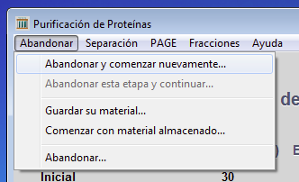
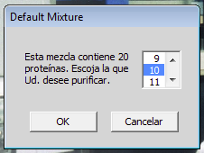
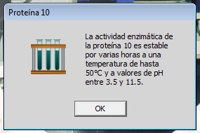
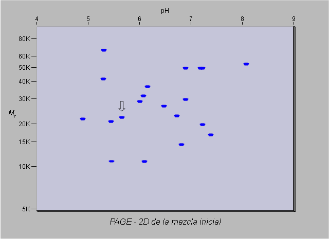

Volver al inicio
Ejercicio previo
Próximo ejercicio
Volver al inicio
Ejercicio previo
Próximo ejercicio
Ejercicio 5 de 6
Purificando una proteína desde una mezcla más compleja
Si usted ha purificado la proteína 2 desde una mezcla simple de 3 proteínas, usted se encuentra listo para purificar una proteína desde una mezcla más compleja de 20 proteínas.

Haga click en el menú Abandonar y seleccione Abandonar y comenzar nuevamente...

Escoja la mezcla Default_mixture.
Esta es una mezcla de 20 proteínas.

Usted esta tratando de purificar la proteína 10.


Si usted examinara un gel de electroforesis 2D, se vería así. El spot correspondiente a la proteína 10 está señalizado con una flecha. Tenga en cuenta que los pesos moleculares dados son para los pesos moleculares de las subunidades. De todas maneras, la información de este gel lo puede ayudar a diseñar un esquema de purificación para esta proteína. Trate de diseñar un esquema. Experimente. Si un método en particular no funciona, trate de comprender por qué y pruebe una estrategia diferente. Recuerde que solo puede abandonar un paso cuando aún no ha colectado las fracciones, en caso contrario tendrá que abandonar el experimento y cargar nuevamente la mezcla.
Debería ser posible purificar la proteína 10 en no más de dos pasos. Si usted puede hacer eso, entonces trate de purificar otras proteínas de la mezcla. Algunas son muy fáciles de purificar y otras tienen mayor dificultad. Usted puede utilizar los métodos de purificación disponibles, pero sea sistemático y realista. Mantenga atención con los costos!. El programa monitorea los pasos que va siguiendo y le enviara un mensaje si no está contento con lo que usted está haciendo. Buena suerte!
Ahora usted debería estar familiarizado con el programa, como cargar diferentes mezclas y como utilizar los métodos disponibles. Antes de terminar, trate un último experimento.